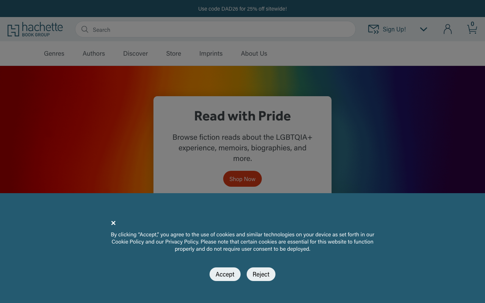
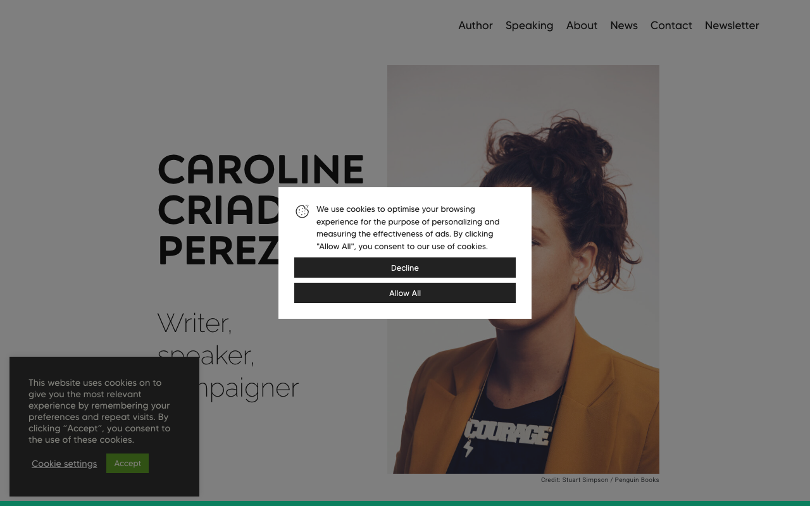

Discussion
Lectures, œuvres et pensées que j'ai envie de partager — en dehors de mes activités professionnelles. Livres, essais, films, ou toute autre forme culturelle qui mérite d'être mentionnée. Les entrées sont libres dans leur format et leur fréquence.
Readings, works, and thoughts I want to share — beyond my professional activities. Books, essays, films, or any other cultural form worth mentioning. Entries are free in format and frequency.
Développement économique et lutte contre la pauvreté
Economic Development and Fighting Poverty
E. Duflo, D. Acemoglu & J. A. Robinson, A. Smith
E. Duflo, D. Acemoglu & J. A. Robinson, A. Smith

Sciences sociales
Social Studies
C. Criado Perez, P. Bourdieu
C. Criado Perez, P. Bourdieu
